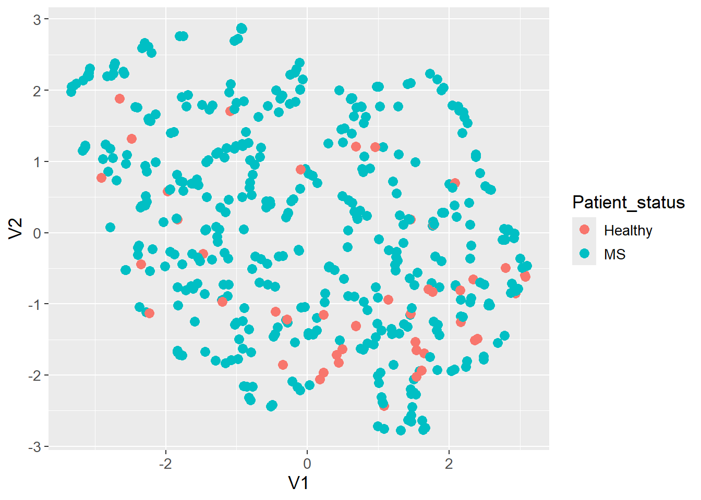

Show the code
set.seed(1337)
library("tidymodels")
tidymodels::tidymodels_prefer()
library("uwot")Set seed and load packages.
set.seed(1337)
library("tidymodels")
tidymodels::tidymodels_prefer()
library("uwot")Load data.
count_matrix_clr <- readr::read_rds("https://github.com/WilliamH-R/BioStatistics/raw/main/data/count_matrix/count_matrix_clr.rds") |>
select(-"NA")
meta <- read.csv(file = "data/metadata.txt") |>
as_tibble() |>
select(Run, chem_administration, ETHNICITY, geo_loc_name,
Host_age, host_body_mass_index, Host_disease, host_phenotype, host_sex) |>
rename(Sample = Run,
Treatment = chem_administration,
Ethnicity = ETHNICITY,
Location = geo_loc_name,
Age = Host_age,
BMI = host_body_mass_index,
Disease_severity = Host_disease,
EDSS = host_phenotype,
Sex = host_sex) |>
mutate(Patient_status = case_when(Disease_severity == "1HealthyControl" ~ "Healthy",
TRUE ~ "MS"),
EDSS = as.factor(EDSS),
EDSS = case_when(is.na(EDSS) & Disease_severity == "1HealthyControl" ~ "-1",
is.na(EDSS) & Disease_severity != "1HealthyControl" ~ "Unknown",
TRUE ~ EDSS),
EDSS = as.factor(EDSS))iris.data <- iris[, grep("Sepal|Petal", colnames(iris))]
iris.labels <- iris[, "Species"] |>
as_tibble()
iris.umap <- iris.data |>
uwot::umap(n_neighbors = 20,
min_dist = 0.2,
metric = "euclidean") |>
as.data.frame() |>
as_tibble() |>
bind_cols(iris.labels) |>
rename(Species = value)
iris.umap |>
ggplot(aes(x = V1,
y = V2,
col = Species)) +
geom_point()count_matrix_umap <- count_matrix_clr |>
column_to_rownames(var = "Sample") |>
uwot::umap(n_neighbors = 20,
min_dist = 0.2,
n_components = 3,
metric = "euclidean") |>
as.data.frame() |>
rownames_to_column(var = "Sample") |>
left_join(meta,
by = "Sample")
count_matrix_umap |>
ggplot(aes(x = V1,
y = V2,
col = Patient_status)) +
geom_point()
# Seems to be better split when using 3D
count_matrix_umap |>
plotly::plot_ly(x = ~V1,
y = ~V2,
z = ~V3,
color = ~Patient_status,
type = "scatter3d",
mode = "markers")Warning in RColorBrewer::brewer.pal(N, "Set2"): minimal value for n is 3, returning requested palette with 3 different levels
Warning in RColorBrewer::brewer.pal(N, "Set2"): minimal value for n is 3, returning requested palette with 3 different levelssessioninfo::session_info() Session info
setting value
version R version 4.3.3 (2024-02-29 ucrt)
os Windows 11 x64 (build 22631)
system x86_64, mingw32
ui RTerm
language (EN)
collate English_United Kingdom.utf8
ctype English_United Kingdom.utf8
tz Europe/Copenhagen
date 2024-05-24
pandoc 3.1.11 @ C:/Program Files/RStudio/resources/app/bin/quarto/bin/tools/ (via rmarkdown)
Packages
package * version date (UTC) lib source
backports 1.4.1 2021-12-13 [1] CRAN (R 4.3.1)
broom * 1.0.5 2023-06-09 [1] CRAN (R 4.3.3)
cachem 1.0.8 2023-05-01 [1] CRAN (R 4.3.3)
class 7.3-22 2023-05-03 [2] CRAN (R 4.3.3)
cli 3.6.2 2023-12-11 [1] CRAN (R 4.3.3)
codetools 0.2-19 2023-02-01 [2] CRAN (R 4.3.3)
colorspace 2.1-0 2023-01-23 [1] CRAN (R 4.3.3)
conflicted 1.2.0 2023-02-01 [1] CRAN (R 4.3.3)
crosstalk 1.2.1 2023-11-23 [1] CRAN (R 4.3.3)
data.table 1.15.4 2024-03-30 [1] CRAN (R 4.3.3)
dials * 1.2.1 2024-02-22 [1] CRAN (R 4.3.3)
DiceDesign 1.10 2023-12-07 [1] CRAN (R 4.3.3)
digest 0.6.35 2024-03-11 [1] CRAN (R 4.3.3)
dplyr * 1.1.4 2023-11-17 [1] CRAN (R 4.3.2)
evaluate 0.23 2023-11-01 [1] CRAN (R 4.3.3)
fansi 1.0.6 2023-12-08 [1] CRAN (R 4.3.3)
farver 2.1.1 2022-07-06 [1] CRAN (R 4.3.3)
fastmap 1.1.1 2023-02-24 [1] CRAN (R 4.3.3)
FNN 1.1.4 2024-01-12 [1] CRAN (R 4.3.3)
foreach 1.5.2 2022-02-02 [1] CRAN (R 4.3.3)
furrr 0.3.1 2022-08-15 [1] CRAN (R 4.3.3)
future 1.33.2 2024-03-26 [1] CRAN (R 4.3.3)
future.apply 1.11.2 2024-03-28 [1] CRAN (R 4.3.3)
generics 0.1.3 2022-07-05 [1] CRAN (R 4.3.3)
ggplot2 * 3.5.1 2024-04-23 [1] CRAN (R 4.3.3)
globals 0.16.3 2024-03-08 [1] CRAN (R 4.3.3)
glue 1.7.0 2024-01-09 [1] CRAN (R 4.3.3)
gower 1.0.1 2022-12-22 [1] CRAN (R 4.3.1)
GPfit 1.0-8 2019-02-08 [1] CRAN (R 4.3.3)
gtable 0.3.5 2024-04-22 [1] CRAN (R 4.3.3)
hardhat 1.3.1 2024-02-02 [1] CRAN (R 4.3.3)
hms 1.1.3 2023-03-21 [1] CRAN (R 4.3.3)
htmltools 0.5.8.1 2024-04-04 [1] CRAN (R 4.3.3)
htmlwidgets 1.6.4 2023-12-06 [1] CRAN (R 4.3.3)
httr 1.4.7 2023-08-15 [1] CRAN (R 4.3.3)
infer * 1.0.7 2024-03-25 [1] CRAN (R 4.3.3)
ipred 0.9-14 2023-03-09 [1] CRAN (R 4.3.3)
irlba 2.3.5.1 2022-10-03 [1] CRAN (R 4.3.3)
iterators 1.0.14 2022-02-05 [1] CRAN (R 4.3.3)
jsonlite 1.8.8 2023-12-04 [1] CRAN (R 4.3.3)
knitr 1.46 2024-04-06 [1] CRAN (R 4.3.3)
labeling 0.4.3 2023-08-29 [1] CRAN (R 4.3.1)
lattice 0.22-5 2023-10-24 [2] CRAN (R 4.3.3)
lava 1.8.0 2024-03-05 [1] CRAN (R 4.3.3)
lazyeval 0.2.2 2019-03-15 [1] CRAN (R 4.3.3)
lhs 1.1.6 2022-12-17 [1] CRAN (R 4.3.3)
lifecycle 1.0.4 2023-11-07 [1] CRAN (R 4.3.3)
listenv 0.9.1 2024-01-29 [1] CRAN (R 4.3.3)
lubridate 1.9.3 2023-09-27 [1] CRAN (R 4.3.3)
magrittr 2.0.3 2022-03-30 [1] CRAN (R 4.3.3)
MASS 7.3-60.0.1 2024-01-13 [2] CRAN (R 4.3.3)
Matrix * 1.6-5 2024-01-11 [2] CRAN (R 4.3.3)
memoise 2.0.1 2021-11-26 [1] CRAN (R 4.3.3)
modeldata * 1.3.0 2024-01-21 [1] CRAN (R 4.3.3)
munsell 0.5.1 2024-04-01 [1] CRAN (R 4.3.3)
nnet 7.3-19 2023-05-03 [2] CRAN (R 4.3.3)
parallelly 1.37.1 2024-02-29 [1] CRAN (R 4.3.3)
parsnip * 1.2.1 2024-03-22 [1] CRAN (R 4.3.3)
pillar 1.9.0 2023-03-22 [1] CRAN (R 4.3.3)
pkgconfig 2.0.3 2019-09-22 [1] CRAN (R 4.3.3)
plotly 4.10.4 2024-01-13 [1] CRAN (R 4.3.3)
prodlim 2023.08.28 2023-08-28 [1] CRAN (R 4.3.3)
purrr * 1.0.2 2023-08-10 [1] CRAN (R 4.3.3)
R6 2.5.1 2021-08-19 [1] CRAN (R 4.3.3)
RColorBrewer 1.1-3 2022-04-03 [1] CRAN (R 4.3.1)
Rcpp 1.0.12 2024-01-09 [1] CRAN (R 4.3.3)
readr 2.1.5 2024-01-10 [1] CRAN (R 4.3.3)
recipes * 1.0.10 2024-02-18 [1] CRAN (R 4.3.3)
rlang 1.1.3 2024-01-10 [1] CRAN (R 4.3.3)
rmarkdown 2.26 2024-03-05 [1] CRAN (R 4.3.3)
rpart 4.1.23 2023-12-05 [2] CRAN (R 4.3.3)
rsample * 1.2.1 2024-03-25 [1] CRAN (R 4.3.3)
rstudioapi 0.16.0 2024-03-24 [1] CRAN (R 4.3.3)
scales * 1.3.0 2023-11-28 [1] CRAN (R 4.3.3)
sessioninfo 1.2.2 2021-12-06 [1] CRAN (R 4.3.3)
survival 3.5-8 2024-02-14 [2] CRAN (R 4.3.3)
tibble * 3.2.1 2023-03-20 [1] CRAN (R 4.3.3)
tidymodels * 1.2.0 2024-03-25 [1] CRAN (R 4.3.3)
tidyr * 1.3.1 2024-01-24 [1] CRAN (R 4.3.3)
tidyselect 1.2.1 2024-03-11 [1] CRAN (R 4.3.3)
timechange 0.3.0 2024-01-18 [1] CRAN (R 4.3.3)
timeDate 4032.109 2023-12-14 [1] CRAN (R 4.3.2)
tune * 1.2.1 2024-04-18 [1] CRAN (R 4.3.3)
tzdb 0.4.0 2023-05-12 [1] CRAN (R 4.3.3)
utf8 1.2.4 2023-10-22 [1] CRAN (R 4.3.3)
uwot * 0.2.2 2024-04-21 [1] CRAN (R 4.3.3)
vctrs 0.6.5 2023-12-01 [1] CRAN (R 4.3.3)
viridisLite 0.4.2 2023-05-02 [1] CRAN (R 4.3.3)
withr 3.0.0 2024-01-16 [1] CRAN (R 4.3.3)
workflows * 1.1.4 2024-02-19 [1] CRAN (R 4.3.3)
workflowsets * 1.1.0 2024-03-21 [1] CRAN (R 4.3.3)
xfun 0.43 2024-03-25 [1] CRAN (R 4.3.3)
yaml 2.3.8 2023-12-11 [1] CRAN (R 4.3.2)
yardstick * 1.3.1 2024-03-21 [1] CRAN (R 4.3.3)
[1] C:/Users/Willi/AppData/Local/R/win-library/4.3
[2] C:/Program Files/R/R-4.3.3/library